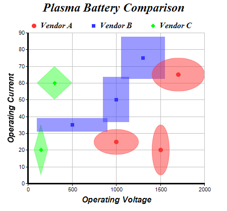

This example demonstrates a bubble chart with independent x and y bubble sizes and non-circular bubbles.
In ChartDirector, a bubble chart in general is a scatter layer with the symbol sizes controlled by some other data series.
ChartDirector supports using arbitrary symbols as bubbles. Thus bubble shape is not limited to circle but can be any shapes.
Furthermore, ChartDirector supports independent x and y sizes for bubbles. This is useful for creating charts in which the bubbles reflect some features of the data points, such as its confidence zone, x and y errors, x and y standard deviations, etc.
The following is the command line version of the code in "cppdemo/bubblescale". The MFC version of the code is in "mfcdemo/mfcdemo". The Qt Widgets version of the code is in "qtdemo/qtdemo". The QML/Qt Quick version of the code is in "qmldemo/qmldemo".
#include "chartdir.h"
int main(int argc, char *argv[])
{
// The XY points for the bubble chart. The bubble chart has independent bubble size on the X and
// Y direction.
double dataX0[] = {1000, 1500, 1700};
const int dataX0_size = (int)(sizeof(dataX0)/sizeof(*dataX0));
double dataY0[] = {25, 20, 65};
const int dataY0_size = (int)(sizeof(dataY0)/sizeof(*dataY0));
double dataZX0[] = {500, 200, 600};
const int dataZX0_size = (int)(sizeof(dataZX0)/sizeof(*dataZX0));
double dataZY0[] = {15, 30, 20};
const int dataZY0_size = (int)(sizeof(dataZY0)/sizeof(*dataZY0));
double dataX1[] = {500, 1000, 1300};
const int dataX1_size = (int)(sizeof(dataX1)/sizeof(*dataX1));
double dataY1[] = {35, 50, 75};
const int dataY1_size = (int)(sizeof(dataY1)/sizeof(*dataY1));
double dataZX1[] = {800, 300, 500};
const int dataZX1_size = (int)(sizeof(dataZX1)/sizeof(*dataZX1));
double dataZY1[] = {8, 27, 25};
const int dataZY1_size = (int)(sizeof(dataZY1)/sizeof(*dataZY1));
double dataX2[] = {150, 300};
const int dataX2_size = (int)(sizeof(dataX2)/sizeof(*dataX2));
double dataY2[] = {20, 60};
const int dataY2_size = (int)(sizeof(dataY2)/sizeof(*dataY2));
double dataZX2[] = {160, 400};
const int dataZX2_size = (int)(sizeof(dataZX2)/sizeof(*dataZX2));
double dataZY2[] = {30, 20};
const int dataZY2_size = (int)(sizeof(dataZY2)/sizeof(*dataZY2));
// Create a XYChart object of size 450 x 420 pixels
XYChart* c = new XYChart(450, 420);
// Set the plotarea at (55, 65) and of size 350 x 300 pixels, with a light grey border
// (0xc0c0c0). Turn on both horizontal and vertical grid lines with light grey color (0xc0c0c0)
c->setPlotArea(55, 65, 350, 300, -1, -1, 0xc0c0c0, 0xc0c0c0, -1);
// Add a legend box at (50, 30) (top of the chart) with horizontal layout. Use 12pt Times Bold
// Italic font. Set the background and border color to Transparent.
c->addLegend(50, 30, false, "Times New Roman Bold Italic", 12)->setBackground(Chart::Transparent
);
// Add a title to the chart using 18pt Times Bold Itatic font.
c->addTitle("Plasma Battery Comparison", "Times New Roman Bold Italic", 18);
// Add titles to the axes using 12pt Arial Bold Italic font
c->yAxis()->setTitle("Operating Current", "Arial Bold Italic", 12);
c->xAxis()->setTitle("Operating Voltage", "Arial Bold Italic", 12);
// Set the axes line width to 3 pixels
c->xAxis()->setWidth(3);
c->yAxis()->setWidth(3);
// Add (dataX0, dataY0) as a standard scatter layer, and also as a "bubble" scatter layer, using
// circles as symbols. The "bubble" scatter layer has symbol size modulated by (dataZX0,
// dataZY0) using the scale on the x and y axes.
c->addScatterLayer(DoubleArray(dataX0, dataX0_size), DoubleArray(dataY0, dataY0_size),
"Vendor A", Chart::CircleSymbol, 9, 0xff3333, 0xff3333);
c->addScatterLayer(DoubleArray(dataX0, dataX0_size), DoubleArray(dataY0, dataY0_size), "",
Chart::CircleSymbol, 9, 0x80ff3333, 0x80ff3333)->setSymbolScale(DoubleArray(dataZX0,
dataZX0_size), Chart::XAxisScale, DoubleArray(dataZY0, dataZY0_size), Chart::YAxisScale);
// Add (dataX1, dataY1) as a standard scatter layer, and also as a "bubble" scatter layer, using
// squares as symbols. The "bubble" scatter layer has symbol size modulated by (dataZX1,
// dataZY1) using the scale on the x and y axes.
c->addScatterLayer(DoubleArray(dataX1, dataX1_size), DoubleArray(dataY1, dataY1_size),
"Vendor B", Chart::SquareSymbol, 7, 0x3333ff, 0x3333ff);
c->addScatterLayer(DoubleArray(dataX1, dataX1_size), DoubleArray(dataY1, dataY1_size), "",
Chart::SquareSymbol, 9, 0x803333ff, 0x803333ff)->setSymbolScale(DoubleArray(dataZX1,
dataZX1_size), Chart::XAxisScale, DoubleArray(dataZY1, dataZY1_size), Chart::YAxisScale);
// Add (dataX2, dataY2) as a standard scatter layer, and also as a "bubble" scatter layer, using
// diamonds as symbols. The "bubble" scatter layer has symbol size modulated by (dataZX2,
// dataZY2) using the scale on the x and y axes.
c->addScatterLayer(DoubleArray(dataX2, dataX2_size), DoubleArray(dataY2, dataY2_size),
"Vendor C", Chart::DiamondSymbol, 9, 0x00ff00, 0x00ff00);
c->addScatterLayer(DoubleArray(dataX2, dataX2_size), DoubleArray(dataY2, dataY2_size), "",
Chart::DiamondSymbol, 9, 0x8033ff33, 0x8033ff33)->setSymbolScale(DoubleArray(dataZX2,
dataZX2_size), Chart::XAxisScale, DoubleArray(dataZY2, dataZY2_size), Chart::YAxisScale);
// Output the chart
c->makeChart("bubblescale.png");
//free up resources
delete c;
return 0;
}
© 2023 Advanced Software Engineering Limited. All rights reserved.